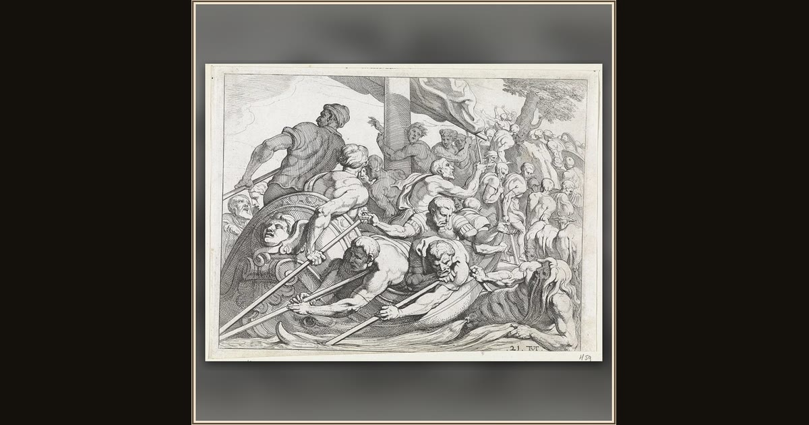

Odysseus Arrives at the Underworld
Theodoor van Thulden, after Francesco Primaticcio · 1632–1633 · Rijksmuseum · Amsterdam, Netherlands
The ship reaches the dim edge of Ocean where Odysseus must dig the trench and call up the dead. Explore its place in Book XI of the Odyssey.